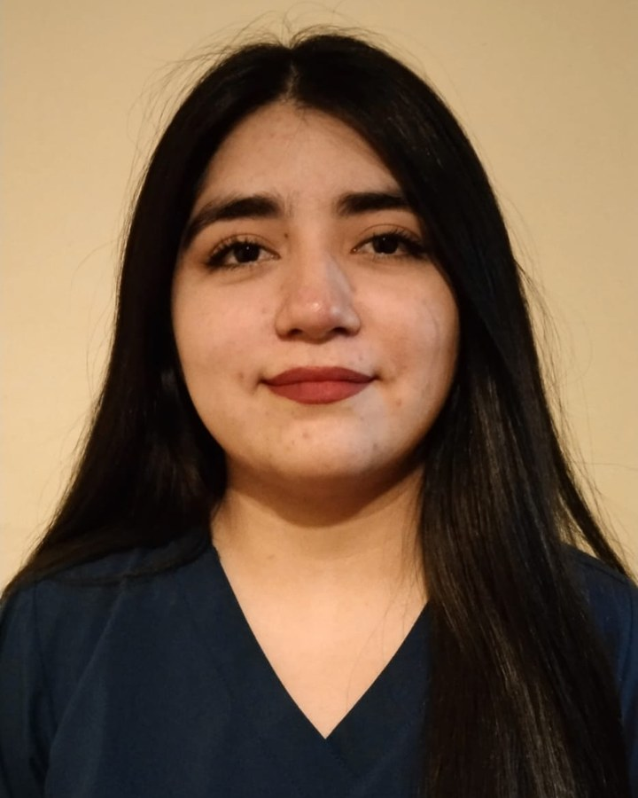

Inyecciones, curaciones, controles y más, con trato humano y materiales estériles.
Ver servicios WhatsApp
Tengo 25 años, soy enfermera titulada de la Universidad de O'Higgins y vivo en la comuna de Graneros, Región de O'Higgins. Me motiva cuidar a las personas con respeto, empatía y rigor técnico.
Llevo la atención de salud hasta tu casa para que tú o tu familia estén tranquilos y cómodos.
Valores referenciales en pesos chilenos (CLP). Insumos y traslado fuera de Graneros pueden tener recargo.
Atiendo a domicilio en Graneros y comunas cercanas. Fuera de Graneros puede aplicarse un recargo por traslado.